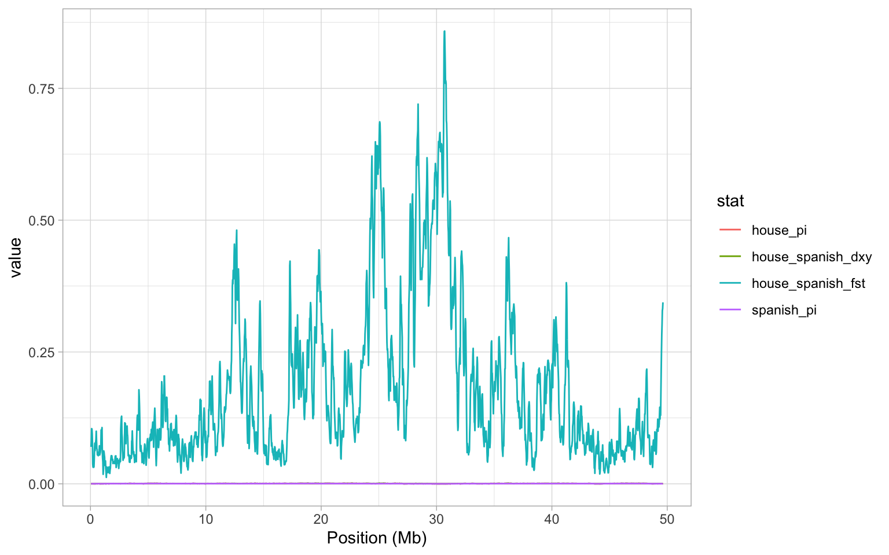
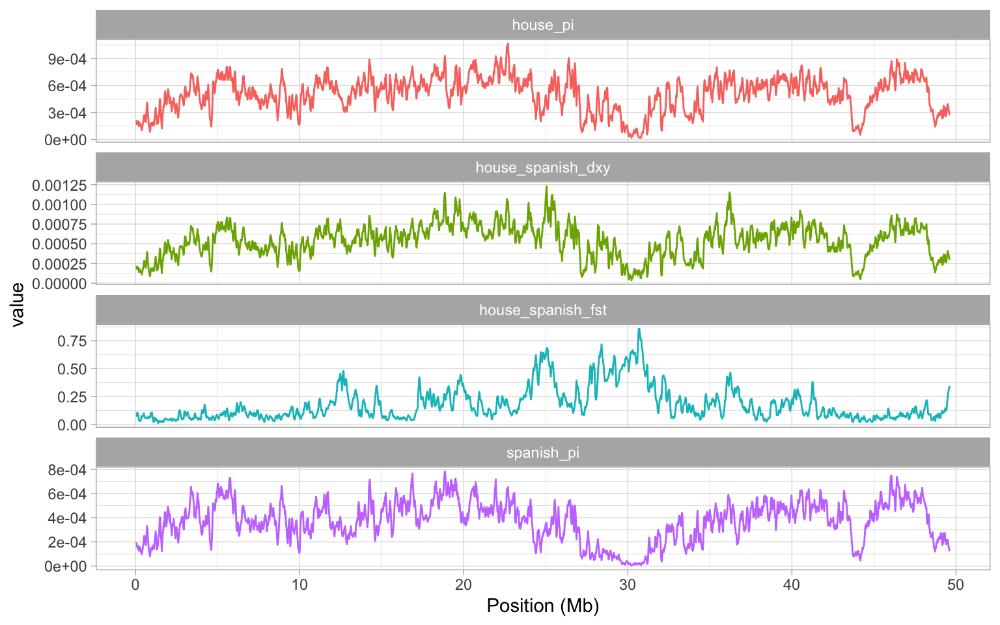

8.4 Visualising the data
For the purposes of this session, we will focus mainly on the difference between house and spanish sparrows. However, since we now have all our data in a tidy data.frame, it is very easy to calculate things like the mean values of our statistics among all the different species. For example, let’s say we want to look at mean nucleotide diversity, we can do that like so:
# select nucleotide diversity data and calculate means
sparrow_data %>% select(contains("pi")) %>% summarise_all(mean)A lot of this will be familiar from before but to clarify, we used select() and contains() to select columns from our main dataset that contain the string "pi"—i.e. nucleotide diversity columns. We then used summarise_all and mean to calculate the mean value for all of the columns we selected. From the output above, we can see that the house and the Italian sparrow have the highest levels of nucleotide diversity.
We could also quite easily plot if we wanted to. However, to do this, we need to use pivot_longer on the data to get all species in one column, and all \(\pi\) values in another34. Note how we can supply contains("pi") inside pivot_longer() to specify which columns to include.
# gather the data
pi_g <- sparrow_data %>%
pivot_longer(contains("pi"), names_to = "species", values_to = "pi")
# make a boxplot
a <- ggplot(pi_g, aes(species, pi)) + geom_boxplot() + theme_light() + xlab(NULL)
aThis makes it much clearer how nucleotide diversity differs among the species.
8.4.1 Visualising patterns along the chromosome
Let’s have a look at how FST between house and spanish sparrows varies along chromosome 8. Note that we plot the mid-point of each window, and divide the position by \(10^6\) to get megabases on the x-axis.
a <- ggplot(sparrow_data, aes(mid/10^6, house_spanish_fst)) + geom_line(colour = "red")
a <- a + xlab("Position (Mb)") + ylab(expression(italic(F)[ST]))
a + theme_light()From this plot, it is clear there is a huge peak in FST around 30 Mb. Actually, there are several large peaks on this genome but is this one a potential region that might harbour a speciation gene? Well you might recall from the previous session that there is a drop in nucleotide diversity in this region…
How can we investigate this? The easiest thing to do is to plot \(\pi\), FST and dXY to examine how they co-vary along the genome. This requires a bit of data manipulation, which we will break it down into steps.
First, let’s get the data we are interested in:
# select data of interest
hs <- sparrow_data %>% select(mid, house_pi, spanish_pi, house_spanish_fst, house_spanish_dxy)To keep things simple, we’ve thrown everything out we don’t need. Next, we need to use pivot_longer in order to rearrange our data.frame so that we can plot it properly.
# use pivot_longer to rearrange everything
hs_g <- pivot_longer(hs, -mid, names_to = "stat", values_to = "value")Here, we use -mid to tell the function we want to leave this out of the pivoting and use names_to = "stat" to make it clear we are arranging our data by the statistics we have calculated, values_to = "value" is just a name for the values of each of our statistics.
Now we can plot everything together:
a <- ggplot(hs_g, aes(mid/10^6, value, colour = stat)) + geom_line()
a <- a + xlab("Position (Mb)")
a + theme_light()
OK so it should be immediately obvious that this plot is really unhelpful. We see the FST data again, but since that is on such a different scale to estimates of \(\pi\) and dXY, we can’t see anything! Instead, it would make a lot more sense to split our plot into facets - i.e. a plot panel for each statistic. Lucky for us, we learned to facet plots with facet_grid in the beginning of this tutorial! Remember that we can specify independent y-axes with scales = "free_y", and set ncol = 1 to get all plots below each other.35
# construct a plot with facets
a <- ggplot(hs_g, aes(mid/10^6, value, colour = stat)) + geom_line()
a <- a + facet_wrap(~stat, scales = "free_y", ncol = 1)
a <- a + xlab("Position (Mb)")
a + theme_light() + theme(legend.position = "none")
Examining the plot we created, it is pretty clear that the large peak in FST on our chromosome is matched by two regions of low nucleotide diversity in the house and Spanish sparrow, dXY is also very low in the same region.
The signal here is quite clear - what could explain it? Low recombination regions in the genome are one potential explanation. The reason for this is that in a low recombination region, background selection and also selective sweeps can remove variation at polymorphic positions that are closely linked to the target of selection. Selection of this kind in either the house or the Spanish lineages AFTER they have split into different species will reduce \(\pi\) in these regions and since FST is a relative measure of differentiation, it will potentially be inflated.
This is an important issue as it means that we cannot reliably use FST to identify genes involved in reproductive isolation from a genome scan. By comparing FST to dXY here, we see the latter is also reduced in this region, which again suggests it is likely that some sort of genome structure might be responsible for the peak in FST we see. One way to investigate this is examine the recombination rate variation along chromosome 8—which we will do next, after a short interlude.
8.4.2 Interlude: relative vs. absolute measures of nucleotide diversity
We have mentioned a couple of times that FST is a relative measure of nucleotide differences, while dxy is an absolute measure. But what does this mean? According to Wikipedia, a simple way of estimating FST (there are many ways to do this) is using the formula:
\[ F_{ST} = \frac{\pi_{between} - \pi_{within}}{\pi_{between}} \]
Thus, FST takes into account not only the nucleotide diversity between the populations, but also the diversity within the populations. So, what if the diversity within is very low, for example 0? Putting that into the formula above, we see that no matter what \(\pi_{between}\) is, FST will be 1.
In other words, FST is sensitive to the variation within each population, which is something you should be aware of before drawing conclusions. dxy does not take the diversity within into account, and is thus an absolute measure of differences.
8.4.3 Investigating recombination rate variation
To check whether variation in recombination might explain the pattern we observed, we will read in the recombination rate estimated for 100 Kb windows with a 25 Kb step on chromosme 8. This was originally estimated from a house sparrow linkage map, published by Elgvin et al (2018) and you can download the data here. We will read the data in like normal
rrate <- read.table("chr8_recomb.tsv", sep = "\t", header = TRUE)Since the recombination rate is the same number of rows as our main dataset, we can just add it as a column.
# assign recombination rate to full sparrow dataset
sparrow_data$recomb <- rrate$recombNow we are ready to see whether the variation in nucleotide diversity and FST can be explained by recombination rate. Let’s plot how it varies along the genome.
# construct a plot for recombination rate
a <- ggplot(sparrow_data, aes(mid/10^6, recomb)) + geom_line()
a <- a + xlab("Position (Mb)") + ylab("Recombination rate (cM/Mb)")
a + theme_light() To explain this a little, we have plotted recombination rate in centiMorgans per Megabase - i.e. essentially the probability that a recombination event can occur. The higher this value is, the higher the probability of recombination. The first obvious point to take home from this figure is that our recombination rate varies quite significantly across the genome. Secondly, we see quite a drastic reduction in recombination rate between about 23 Mb and 30 Mb. This is exactly where our FST peak occurs. to confirm this, we will plot both statistics together.
# subset data and gather
hr <- sparrow_data %>%
select(mid, house_spanish_fst, recomb) %>%
pivot_longer(-mid, names_to = "stat", values_to = "value")
# make a facet plot
a <- ggplot(hr, aes(mid/10^6, value)) + geom_line()
a <- a + facet_wrap(~stat, scales = "free_y", ncol = 1)
a <- a + xlab("Position (Mb)") + ylab("Recombination rate (cM/Mb)")
a + theme_light() When we plot our data like this, it is actually more clear that perhaps both of the large peaks on chromosome 8 occur in an area of very low recombination. What could be causing such low recombination? Well one possibility is the centromere is likely to be present here.
Now that we have recombination data read into R, we can also explore the relationships between recombination rate and other statistics in more detail. To demonstrate this, we will plot the joint distribution of recombination rate and FST between house and Spanish sparrows.
# plot recombination rate and fst
a <- ggplot(sparrow_data, aes(recomb, house_spanish_fst)) + geom_point()
a <- a + xlab("Recombination rate (cM/Mb)") + ylab(expression(italic(F[ST])))
a + theme_light() Clearly there is a bias here - higher FST values are found in regions of low recombination. Although this doesn’t completely invalidate the use of FST in speciation genomics, it does mean we must be cautious when using it to identify genes involved in speciation. If we had not done so here, it would have been quite easy to mistake the peak on chromosome 8 as having an important role in maintaining reproductive isolation between house and Spanish sparrows.
It may have been a while since the last time you saw
pivot_longer(). If you have forgotten how it works or why we use it, remember that you can always go back to Week 2.↩︎In this case, the plot might be easier to interpret if we rearranged everything so FST came at the top, \(\pi\) beneath it and then finally, d_XY_. We can use the function
fct_relevel()for manually reordering the factors to achieve this:new_order <- c("house_spanish_fst", "house_pi", "spanish_pi", "house_spanish_dxy") hs_g$stat <- fct_relevel(hs_g$stat, new_order)We can now replot our figure with the new order:
# construct a plot with facets a <- ggplot(hs_g, aes(mid/10^6, value, colour = stat)) + geom_line() a <- a + facet_wrap(~stat, scales = "free_y", ncol = 1) a <- a + xlab("Position (Mb)") a + theme_light() + theme(legend.position = "none")